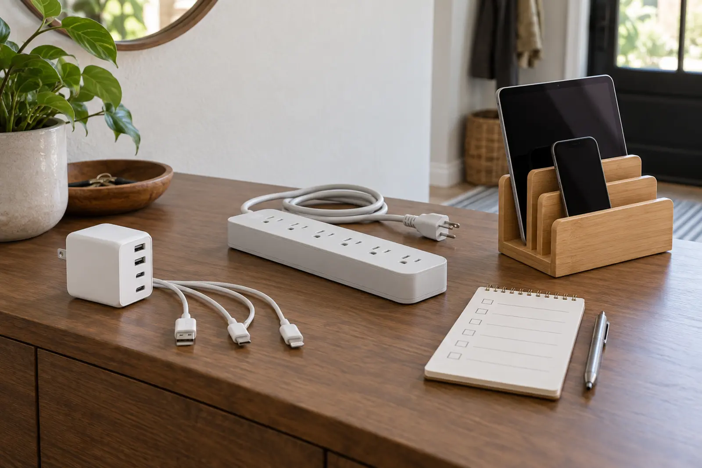

1. Device
Exact model and the manufacturer's current charging instructions. “Tablet” is not specific enough.
AT HOME · USEFUL TECHNOLOGY · BUY LESS WRONG
A charging station is three separate decisions: where devices live, what safely supplies power and which cable actually negotiates the charge. Port count is the easy part—and often the least useful one.

A multiport USB charger supplies low-voltage power through USB ports. Its total rating, per-port behavior and supported charging protocols decide what happens when several devices connect. A power strip expands AC receptacles so original device adapters can remain in use; it may or may not provide surge protection, and the label must say what it is. A dock or organizer manages devices physically. A passive stand does not supply power. An integrated charging dock combines functions and must be evaluated as electrical equipment, not furniture.
This guide covers phones, tablets, e-readers, watches and similarly documented household electronics. It does not cover e-bikes, mobility devices, power-tool packs or other high-energy batteries. CPSC specifically warns against incompatible “universal” chargers for micromobility products. Use only the charger approved for that exact product.
Fits: a family with several ordinary USB-charged devices and known requirements. Wins: fewer wall bricks, less AC clutter and one visible place to count devices. Tradeoffs: shared output can change by port combination; a high headline wattage may not be available to every port; proprietary watch pucks and older connectors still need the right cable.
USB-IF maintains certification programs and an official product search. Certification does not promise that a charger is right for every device, but it gives the buyer a real compliance trail. Read the maker's port table. If the output distribution is unclear, the product is not ready for this system.
Fits: mixed devices whose manufacturer-supplied adapters are different or proprietary. Wins: preserves the documented power supply for each device and makes replacement simpler. Tradeoffs: bulk, cable clutter, blocked receptacles and confusion between a plain power strip and a surge protector.
UL describes a power strip as a block of receptacles that connects to a branch circuit. A power strip is not automatically a surge protector. Never plug one power strip into another, and do not use the station for heaters, cooking appliances or other loads prohibited by the product instructions. If a receptacle is loose, hot, discolored or damaged, stop using it and contact a qualified electrician rather than building a nicer organizer around the problem.
Fits: a family whose chargers already work but whose devices disappear into bedrooms and couch cushions. Wins: visible ownership, cable routing and a consistent overnight home. Tradeoffs: slot width, case thickness, watch-puck fit, trapped heat and the false impression that organization solves electrical compatibility.
Measure the widest cased device, thickest cable connector and number of simultaneous devices. A passive organizer should not pinch cables or cover vents. If the product includes internal power electronics, evaluate its electrical ratings and certification like any other charger.
No hand test certifies electrical safety, and some warmth can be normal under a manufacturer's instructions. The point is to catch obvious mismatch or damage—not to invent a household laboratory.
Start with categories, then verify the exact listing:
The affiliate options below are search links to relevant categories, not tested winners. Confirm the exact model against the compatibility card and official databases before buying. Three precise links are more useful than a carousel of mystery gadgets.
Give every device one labeled slot or position. The child returns the device; the adult owns charger condition, recall checks and cable replacement. Use the power-bank guide for travel power, not as permission to pile battery packs into the home station. Use the location-tracker guide before buying a watch simply because the dock has room for it.
Once a month, remove every device, wipe the organizer according to its instructions, inspect cables and plugs, search recalls and delete abandoned cords. The family hotel-room system uses the same principle on the road: one home for essential devices, without hiding heat or cable damage.
This is a product-selection and organization framework, not electrical installation advice. Do not open a charger, alter a cord, replace a receptacle or add fixed wiring based on this page. Stop using damaged equipment. Work on outlets, circuits or building wiring belongs to a qualified electrician following the applicable code and product instructions.
MAKE THE DAY COUNT
Build the plan your family can finish well, then leave enough energy for the next part of the day.
More family plansTHE USEFUL STUFF
These are practical categories to compare—not a reason to overpack. Check fit, specifications and current reviews before buying.
Paid links: As an Amazon Associate I earn from qualifying purchases. You pay no additional cost.
Compare total and per-port output, shared-output behavior, supported protocols, certification record and the maker’s current instructions.
See current options → COMPARE ON AMAZONVerify the exact listing, receptacle spacing, cord length, overload protection, surge status and permitted use before choosing a strip.
See current options → COMPARE ON AMAZONMeasure cased-device slots and cable routing, and confirm whether the organizer contains any electrical components before buying.
See current options →